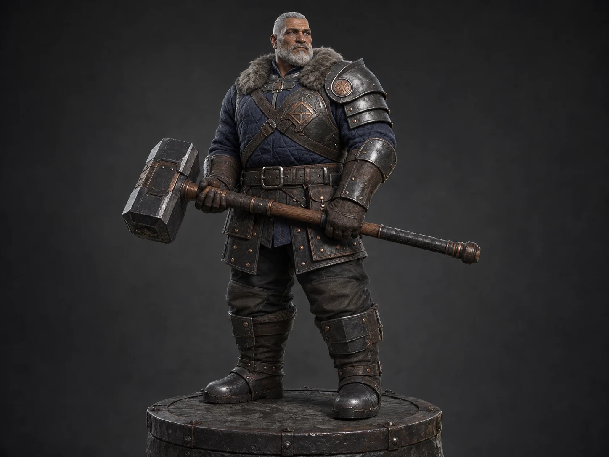

Final presentation

Character direction study
Forge Warden — Character Direction
I developed the Forge Warden as a seasoned smith-warrior whose weight, protection, and working history read before any small detail.
- Starting point
- Written character brief
- Role
- Character direction artist
- Focus
- Silhouette, costume logic, materials, and prop relationship
- Final set
- Hero, rear construction view, and detail study
Starting point
Weight before ornament.
Starting from a written brief, I treated the Forge Warden as a veteran craftsperson first and a fantasy fighter second. The character needed to feel capable of standing at a furnace, carrying tools, and holding ground without relying on spikes or oversized decoration. That pushed the design toward a compact torso, broad shoulders, planted boots, and a low center of gravity.
My first decision was to make the hammer part of the body read rather than a separate accessory. Its long shaft creates a second strong axis across the pose, while the square head echoes the character’s blocky proportions. Even at thumbnail size, the tool, shoulder line, and stance work together to identify his role.
Designing the imbalance
One protected side keeps the body readable.
I concentrated the hard armor on one shoulder and forearm instead of wrapping the entire figure in plate. That asymmetry gives the silhouette a practical bias—the guarded side absorbs visual weight—while the open side reveals the quilted gambeson, leather harness, and hand position. The result feels equipped rather than buried.
The material palette follows the same hierarchy. Indigo cloth carries the largest color field; gray fur frames the head; dark steel establishes protection; and muted copper rivets create small points of warmth. Worn leather and textured wood connect the armor to the hammer, so the prop belongs to the same working world as the costume.
Project direction
A forge guardian built for instant role recognition.
I shaped an older, compact defender whose weight comes from proportion, costume hierarchy, and the long square-headed hammer.
Problem solved
Problem solved.
Process
Process structure.
Selected project media
Visual direction.
Reading the character in the round
The back view carries the same logic without the hammer.
For the rear presentation, I removed the weapon from the composition so the costume construction could do the work. The crossed harness breaks up the broad quilted back, the fur collar keeps the head anchored, and the belt and split skirt panels step the eye down toward the guarded boots. Nothing on the rear view needs a new motif to feel complete.
The close study brings the face, gloved contact, shoulder layering, waist, and footwear into one read. I used it to check whether the weathering stayed restrained and whether cloth, fur, leather, steel, copper, and wood remained distinct at a tighter scale. Those material changes support the character’s age and occupation without turning the surface into noise.
Final read
A clear character target from silhouette to surface.
The finished set presents one coherent Forge Warden across a grounded hero, a weapon-free rear view, and a focused detail study. Together, the images communicate the veteran identity, asymmetrical protection, costume hierarchy, and hammer relationship as a clear target for a later character build.
What I value most in this study is its restraint. The character feels specific because the large decisions agree: his proportions carry the weight, the costume supports the job, and the materials reinforce use. It demonstrates how I approach character direction—establish the role early, protect the silhouette, and let detail earn its place.
Visual read